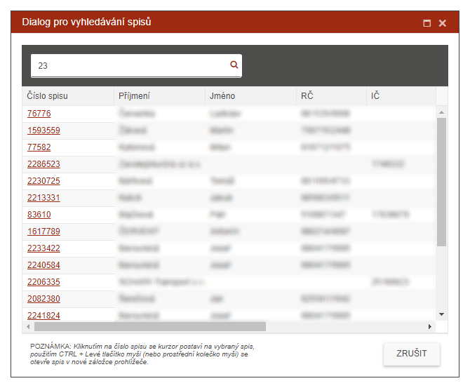

Vyhledání spisů
V poli pro vyhledávání se zadá řetězec, podle kterého si přeje uživatel najít spis.

Systém prohledává databázi nad několika vybranými sloupci (Číslo spisu, příjmení, datum narození a telefonní číslo všech osob ve spise, RČ, IČ, variabilní symbol) a vypíše čísla všech spisů, které obsahují vyhledávaný řetězec.
Kliknutím na číslo spisu se kurzor postaví na vybraný spis. Použitím CTRL + Levé tlačítko myši (nebo pouze stisknutí prostředního kolečka myši bez klávesnice) se ta samá záložka otevře v novém okně prohlížeče. Tam se kurzor postaví na vybraný spis a zobrazí se detail spisu.